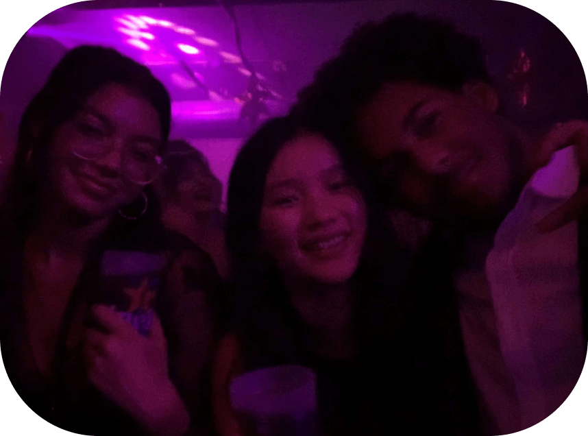
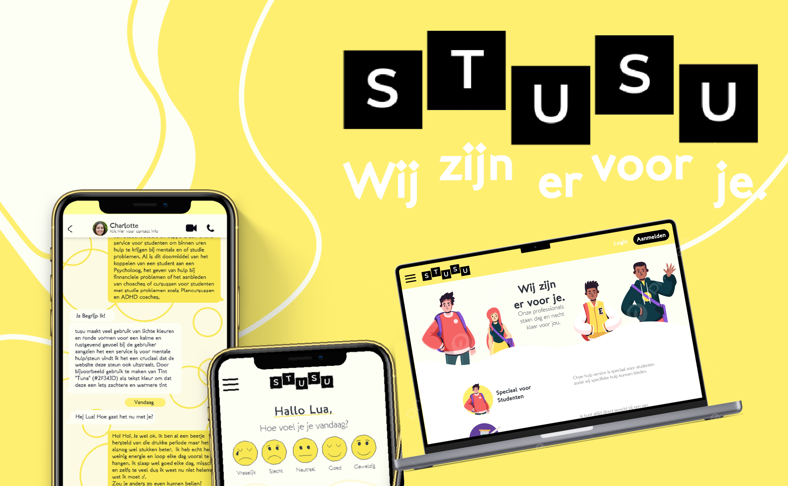
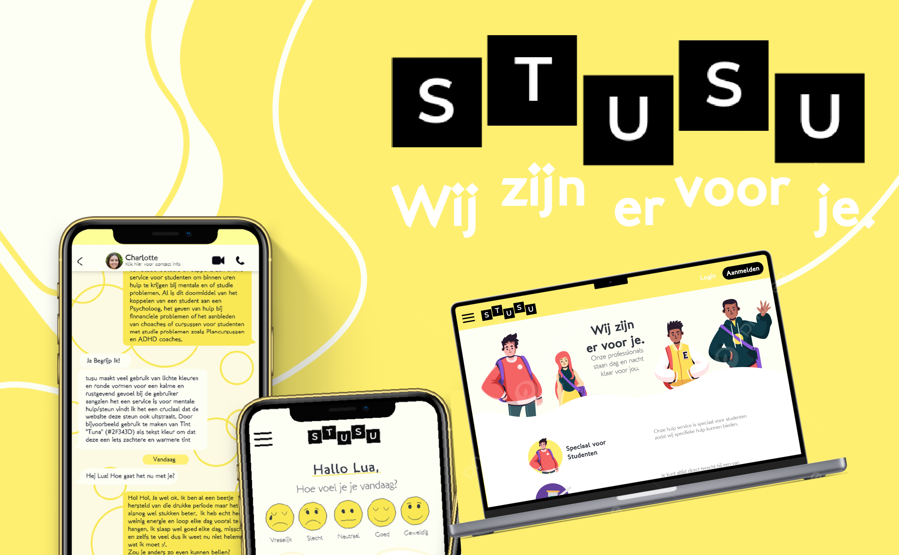
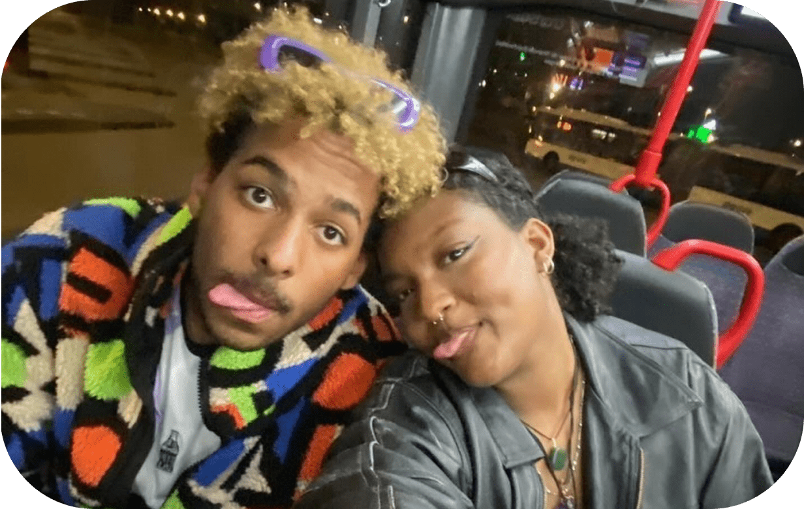
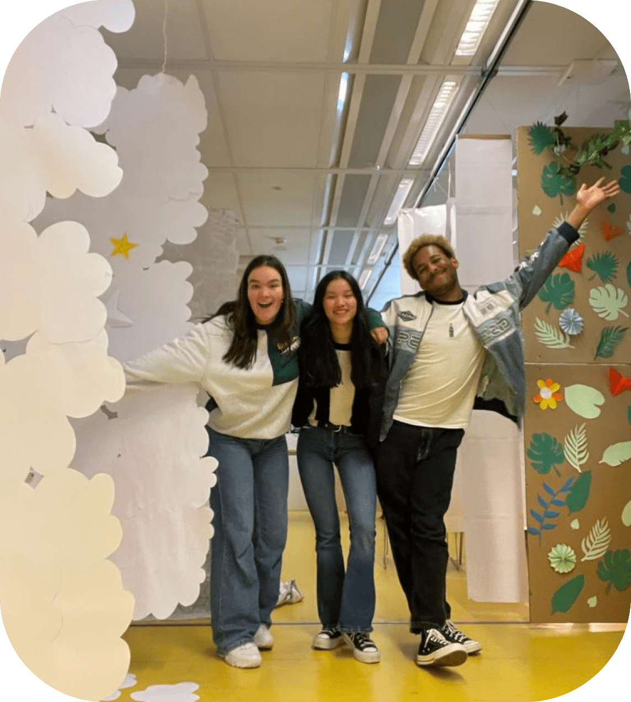
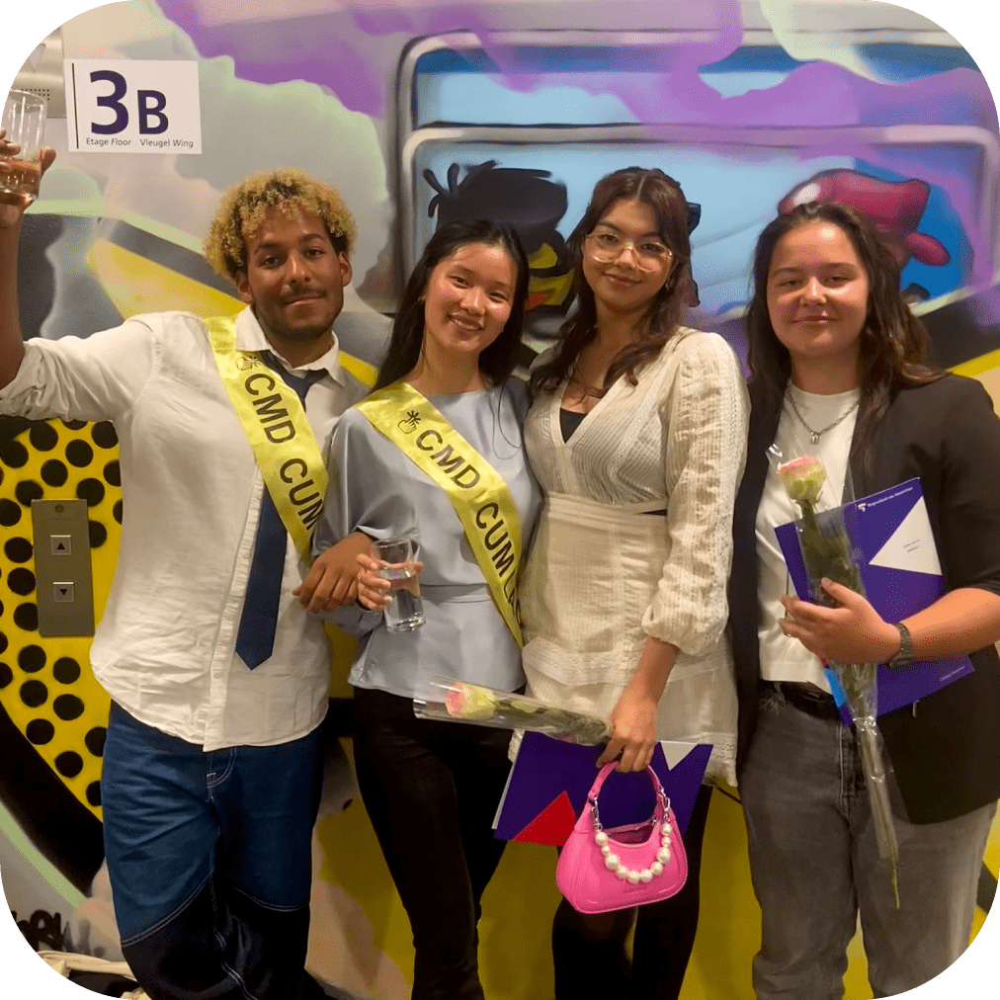
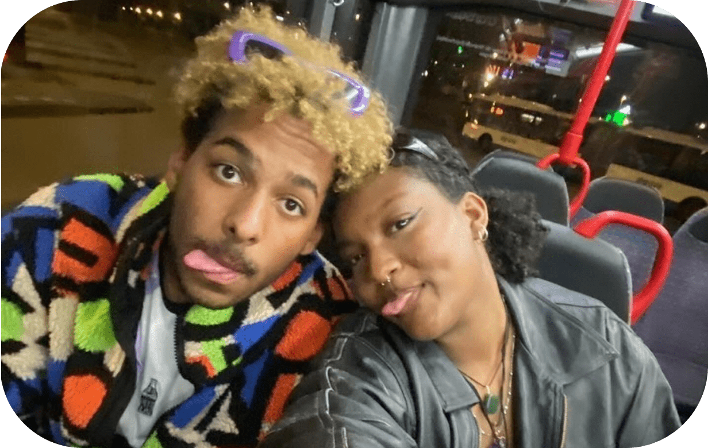
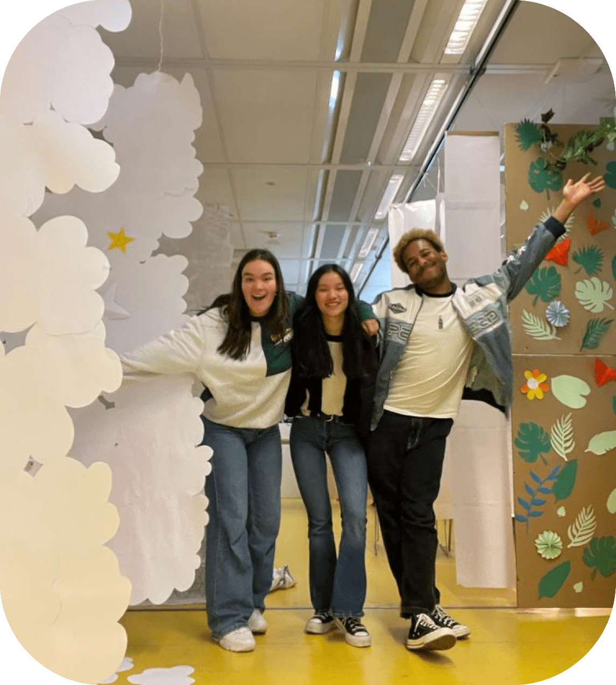
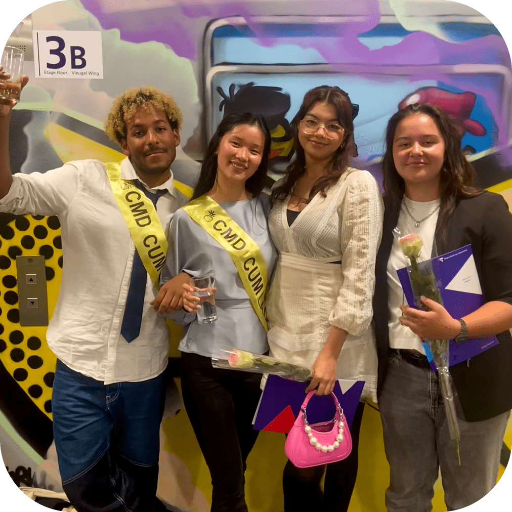

Who I am
ABOUT
ME

Lua Telgt
Hi I am Lua! I am a second year student at the University of Applied Sciences in Amsterdam, Majoring in Communication and Multimedia Design. I got a passion for design and web development but that is not all there is about me.
Jump to my resume
What i like
Outside of school and work i got several hobbies:
I like dancing and try to be in the dance studio as much as i can. Next to dancing i like spending time
with friends; having dinner together, going out or having little trips. I also love watching TV and then
specifically watching British crime/drama series. Tuning in for the weekly episodes of Silent Witness or
Death in Paradise are part of my weekly routine.
A list of other things i like:
- Trains
- Mike Flanagan's (serie) works
- Discovering and listening to (new) music
- Shopping
- Gaming
Me in the dance studio
Me out with friends
 


What i design
I like to make works for the people. Projects focusing on making a better place of the world. When i am
working on something i feel like can make a difference in the world i get in my flow. I got several
projects in which i got to do that like Club Safe, StuSu en Mensen Verhalen.
In my design i like to use colour, shapes and drawings. While this is most definitely not the only style
i can do, it is my most favourite style, like my site definitely represents.
What i bring
I am a dedicated worker who consistently strives for perfection in both my professional and academic life. My love for learning has led me to constantly improve my skills and knowledge. This is evident from my cum laude recognition in both Havo and my freshman year, as well as my C1 Cambridge Certificate. Additionally, I have honed my skills in theatre and debate, winning several awards in the process.
The skills I've acquired in theatre, debate, and art are now tools I apply in all my endeavours. I work well both in a team and independently. I'm sociable and outgoing, always thinking outside the box and dreaming big. I believe that this is where the most innovative and refreshing ideas are concealed. I am continually working towards turning these dreams and ideas into reality. I don't stop until I feel like I've created something to the best of my ability.
If you liked my brief sales pitch and think I could be a great asset to you or your team, please don't hesitate to reach out!
Let's get in touch
 





My Resume
To see everything i have been up to academically as well as career wise, please refer to my resume. Old Fashioned on paper (as PDF) of on my linked in.
Go to my linkedin